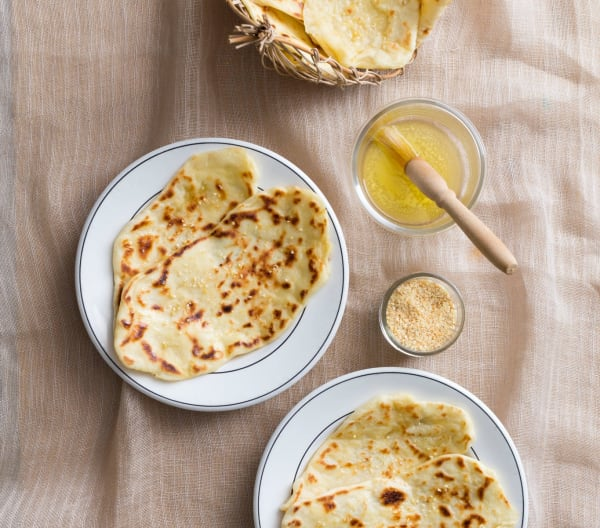

Naan Bread

Description:
- This Naan bread recipe is of medium difficulty.
- It has a preparation time of 30 Minutes.
- Takes a total time of 2 hrs 40mins.
- This recipe has as serving size of 10 portions.
Ingredients:
- 1 ½ tsp dried instant yeast or 15 g fresh yeast
- 3 tsp caster sugar
- 195 g water
- 120 g natural yoghurt
- 435 g plain flour, plus extra for dusting
- 30 g olive oil
- 1 ½ tsp sea salt, plus extra for sprinkling
- ½ tsp baking powder
- 60 g butter
- 2 tsp granulated garlic (optional)
Steps:
- Place yeast,sugar and water into mixing bowl and warm 2min/37°C/speed 1.
- Add yoghurt and flour and mix 3sec/speed 3.
- Add olive oil, salt and baking powder and knead dough/30 sec.
- Transfer dough into an oiled ceramic or glass bowl and place a kitchen towel
over the top. Leave dough to prove in a warm place until doubled in size(approx. 2hours).
- Transfer dough onto a silicone bread mat or floured work surface.Clean and dry
ceramic or glass bowl, dust with extra flour and set aside. Separate dough into 10 equal-sized pieces(the
dough will be extremely sticky). Lightly work each piece into a ball and placeinto prepared ceramic or glass
bowl, ensuring the naan don't stick to each other.
- Using a rolling pin, roll each piece of dough into an oval, then shape the naan by strectching it out to
create a longer oval(approx. 30 x 10 cm). Lightly flour each naan and set aside.
- Place butter and granulated garlic(optional) into mixing bowl and melt 1-2min/50°C/speed 1, or until buter has melted.
- Place a large frying pan over high heat. Working one naan at a time, place into frying pan and cook until dark brown
blisters start to form (approx 1-1½ minutes each side). Remove naan from the heat, brush with melted butter
and garlic mixture, then sprinkle with a little salt. Serve hot alongside your favorite curry.